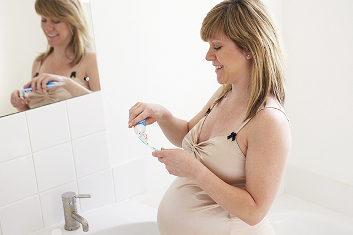

임산부를 위한 구강 관리법
임신 중 호르몬의 변화는 산모의 치아와 잇몸 건강은 아기의 성장에 영향을 줄 수 있습니다. 산모의 구강 관리는 태아의 건강을 위해서도 중요합니다. 임신 기간 동안에도 치과 정기 검진은 빠짐없이 받아야 합니다.
임신 중 입안의 변화
임신을 하게 되면 입덧 등의 증상으로 칫솔질 시 구토증을 느낀다고 합니다. 반대로 편식, 기호 식품의 변화, 식사 간식 섭취 횟수가 증가하는데 칫솔질을 게을리 하면 충치나 잇몸병의 원인이 됩니다. 게다가 임신 중에는 내분비 기능의 변화로 잇몸출혈, 부종이 증가하게 되는데 치과 검진이나 치료를 기피하게 되어 구강 질환을 키우게 되는 경우가 많습니다.
임신 중 구강 관리
-
임신 전 치과 질환 치료 받기
-
입덧 시 컨디션이 좋은 시간에 칫솔질
-
구토증이 있을 시에는, 냄새가 약한 치약 사용.
-
칫솔모를 잇몸의 경계에 대고 가볍게 진동하듯 칫솔질(바스법)하기.
-
입안을 자주 헹구고, 치실 사용하기
-
단맛의 과자류 간식 피하기
-
임신 중에도 구강검진을 통해 가능한 예방적 치료 받기